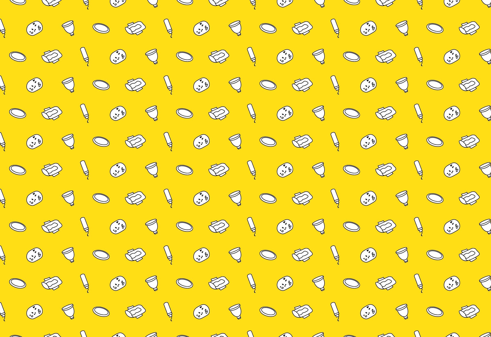
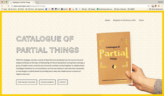

Catalogue of Partial Things
Skills
My role
As a student design researcher at the Tactile and Tactical Lab (TATLAB), I worked with co-student designer Leena Choi and PhD researcher Sarah Fox.
What is the Catalogue of Partial Things?
With this catalogue, we share a series of ideas that have developed over the course of several design workshops on the topic of Maintaining the Menstruating Body. During these meetings, a group of health workers, activists and community members worked together to collaboratively investigate limitations to current products, services and systems in ways that may reveal paths to new designs or policies aimed at providing more ready and reliable access to menstrual hygiene resources.
Planning the Workshop
During initial workshop planning, my primary role was crafting the project's visual identity. And so we asked, how might we invite our audience to engage in a taboo topic that can be uncomfortable to talk about? Inclusion became an important consideration. One result of this is the menstrual pattern, illustrated and designed to be gender-neutral, fun, warm and welcoming. The pattern found its way into outreach and workshop materials, making it a versatile asset to use throughout the project's entirety.

Building on workshop ideas
Low fidelity concepts emerged from the 4 workshops. After each workshop, Leena and I further developed these ideas in a higher fidelity form.
Here are some of the prototypes featured in the catalogue:
Here, I gained a lot of experience rapid prototyping using Adobe Illustrator as well as how to structure my design workflows. The process was iterative and required several feedback cycles.
Designing the catalogue cover
I was tasked with designing the catalogue cover. Several trips to the maker space later...
Trips to the maker space looked like this:
Packaging it all together
It felt like we were running a print and packaging shop. We made 50+ catalogues in-house– folding, cutting, pasting, stapling, and all the make-ing words. Check out the full catalogue here:
I also designed and coded the website for the project, which is here:
Future
The catalogue was distributed to workshop participants. We view the catalogue as a living object– it is not only meant to share ideas but for others to build upon!